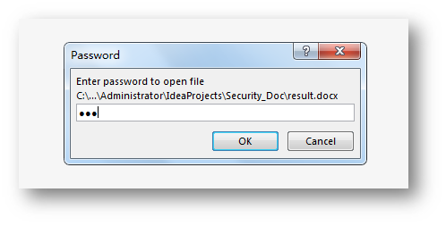

对一些重要文档，我们为保证其文档内容不被泄露，常需要对文件进行加密，查看文件时，需要正确输入密码才能打开文件。下面介绍了一种比较简单的方法给Word文件添加密码保护以及如何给已加密的Word文件取消密码保护。
使用工具：Free Spire.Doc for Java（免费版）
Jar文件导入：
方法1：通过官网下载。下载后，解压文件，并将lib文件夹下的Spire.Doc.jar文件导入到java程序。参考如下导入效果：
import com.spire.doc.*;
public class Encrypt {
public static void main(String[] args){
//加载测试文档
String input = "test.docx";
String output= "result.docx";
Document doc = new Document(input);
doc.encrypt("123");//设置文档打开密码
//doc.protect(ProtectionType.Allow_Only_Reading,"123");//设置文档只读
//doc.protect(ProtectionType.Allow_Only_Comments,"123");
//doc.protect(ProtectionType.Allow_Only_Revisions,"123");
//保存加密后的文档
doc.saveToFile(output);
doc.dispose();
}
}文件加密结果：

import com.spire.doc.*;
public class Decrypt {
public static void main(String[] args){
//加载带密码的文件，输入原密码并解除
Document doc = new Document();
doc.loadFromFile("result.docx",FileFormat.Docx_2013,"123");
//将解密后的文档另存
doc.saveToFile("Decrypt.docx",FileFormat.Docx_2013);
}
}运行程序后，生成的文件将不再有密码保护。
（本文完）